Documenting the development of a robust drive system for an automated apple harvester.
The need for this project arose from a quick realization that we needed to stay centered in an apple trellis to pick effectively and reduce downtime. Being unable to stay centered introduces the following issues:
The reason for this was mainly that our motors did not follow the commanded speed accurately enough to keep us centered in the row.
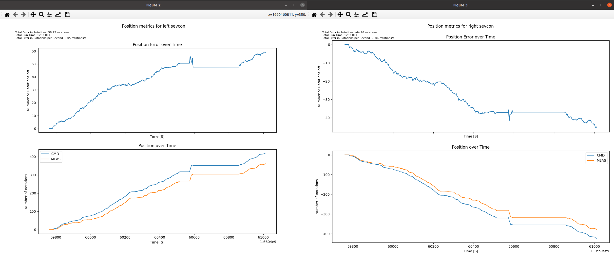
Therefore the overall goal of this project was to enhance the drive system software for our robotic apple harvester in order to provide precise motor control in rough terrain
Before I jump into some of the key challenges and pivotal decisions, let me give you some context about the system I had to become familiar with.
Here is a high-level CAN network diagram I made for the strawberry harvester, which remains mostly unchanged for the apple harvester.
The harvester is a complex distributed system. To manage the sequencing of various services around the harvester, we use systemd on each of the service nodes. Below is a diagram of some of the key services running on our master computer.
Here is an example of the data configured to get sent over the bus:
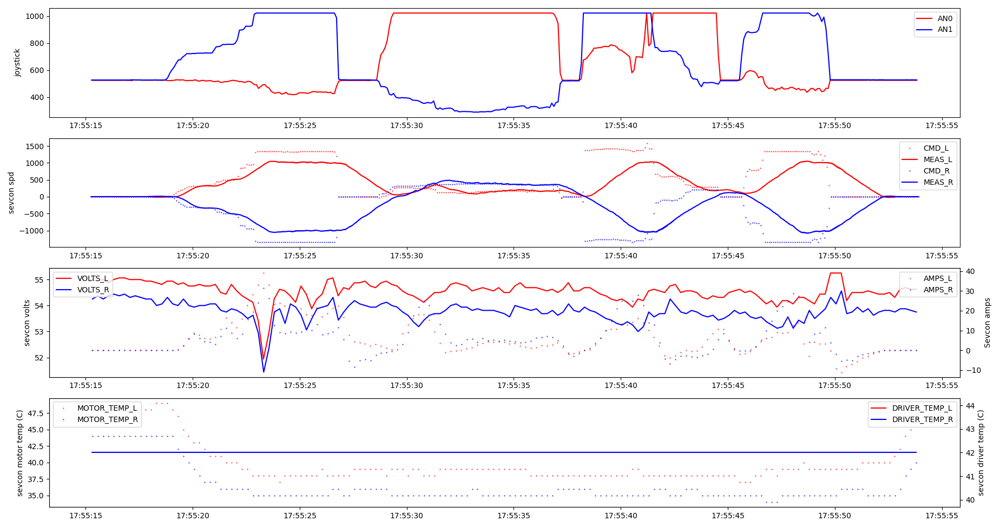
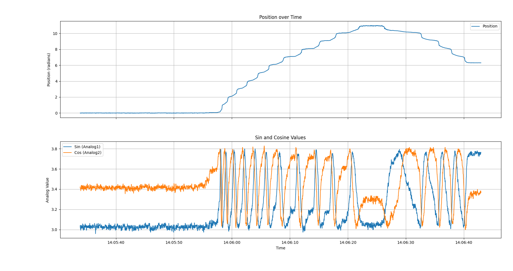
Another challenge I encountered was having to understand all these individual components enough to do the wiring on them:
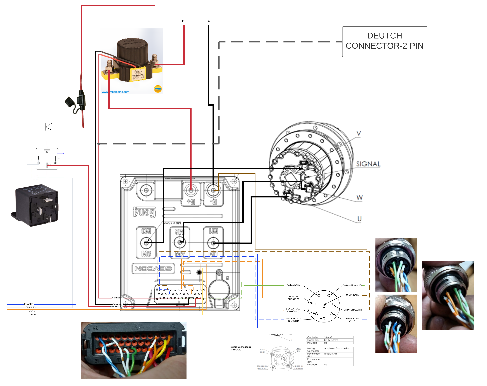
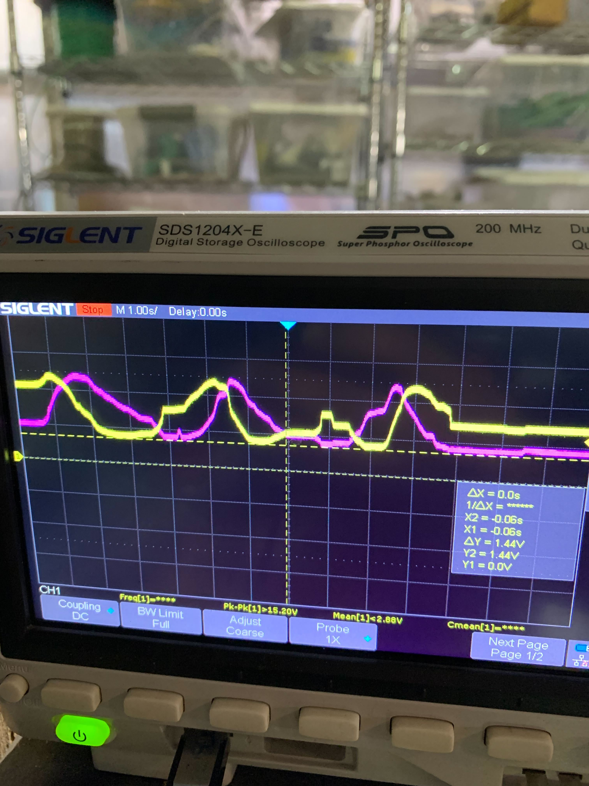
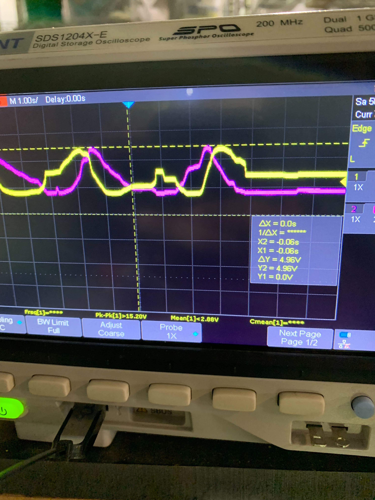
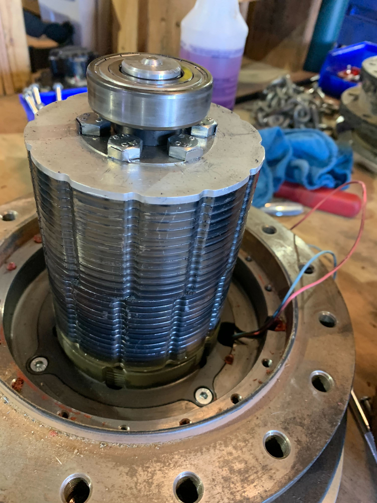
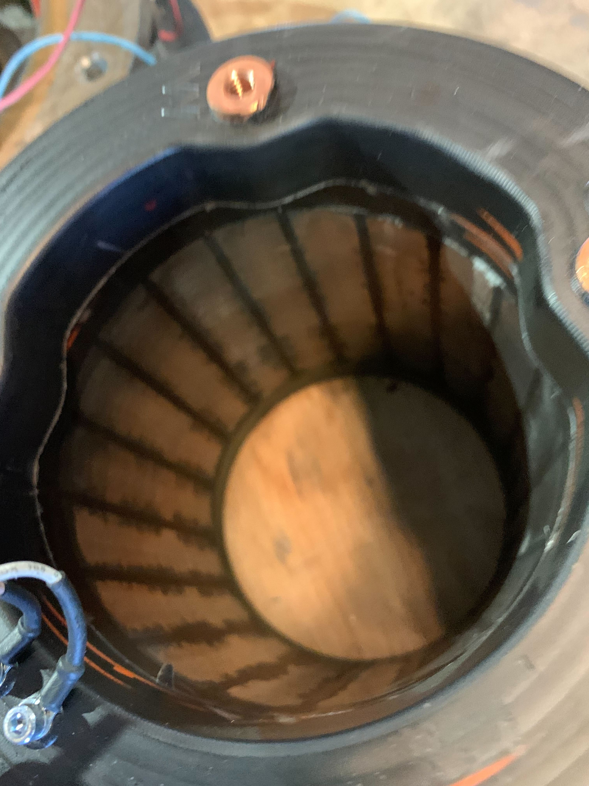
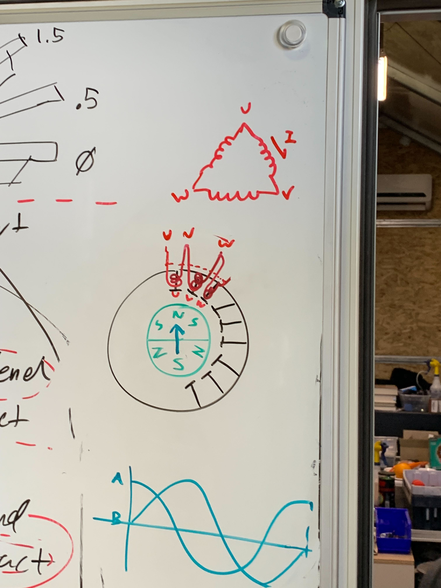
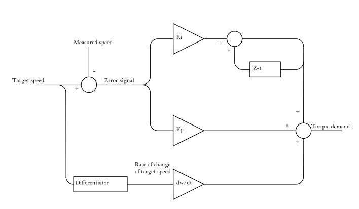
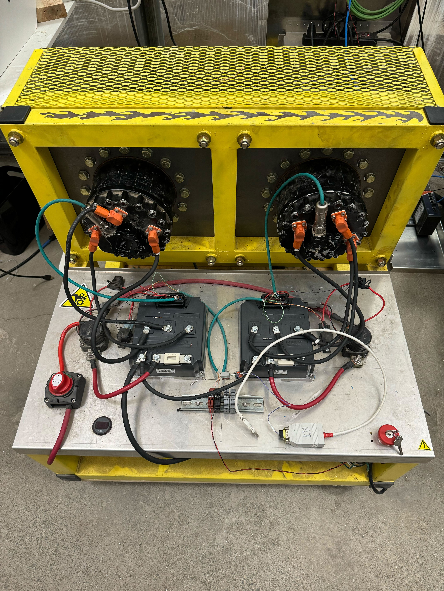
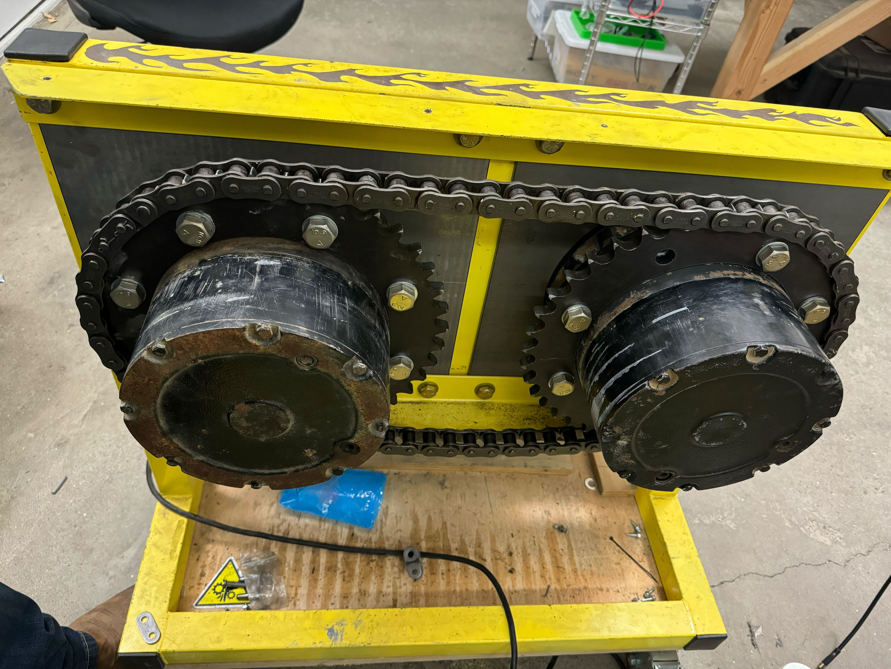
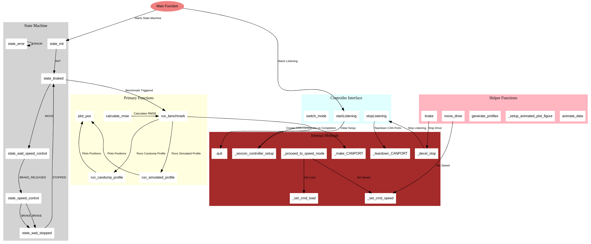
Method to replay captured data on the test bench to emulate field control and tune gains and features.
Implemented an exponential joystick map to provide better handling at low to mid speeds while still providing full power at full deflection.
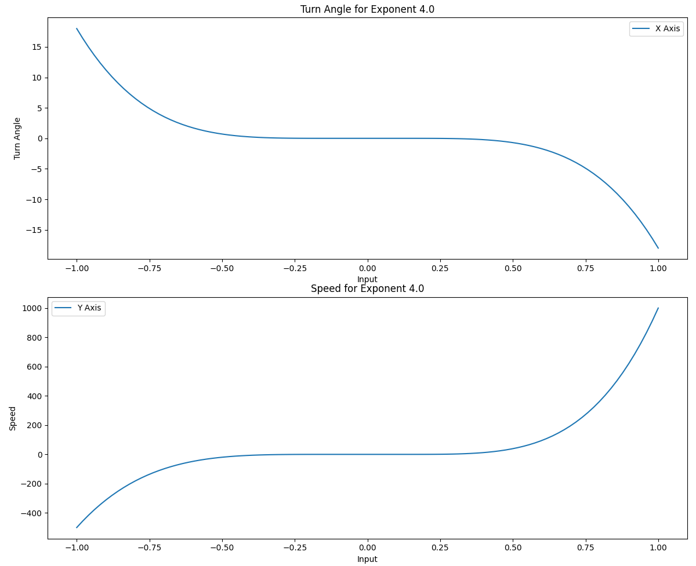
In this project I also chose to refactor our Sevcon controller state machine as there were complaints of the drives continuing to move after commanding zero speed.
State diagram for the Sevcon controller. States in blue are ones I modified or created.
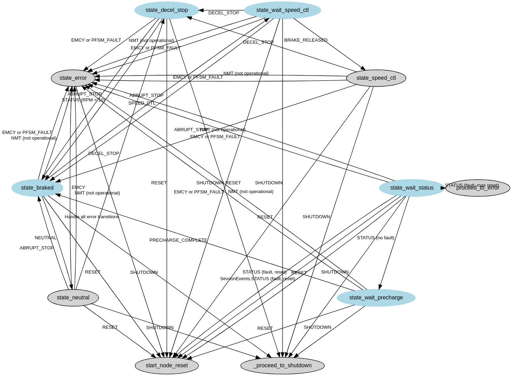
Here is a plot I generated that tracks commanded and measured position information from real-life trellis driving before I implemented my features:
And here is the same plot after I implemented my features:
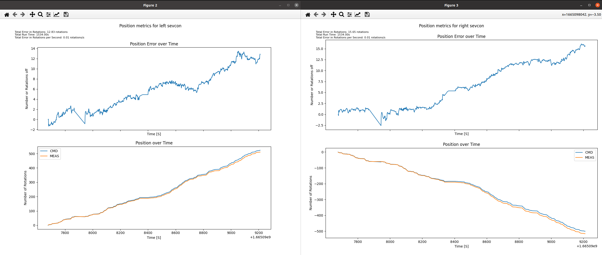
What I would do differently knowing what I know now:
{kind=link}
{kind=link}